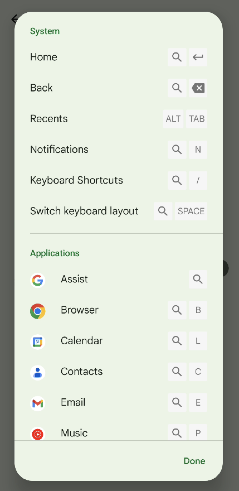
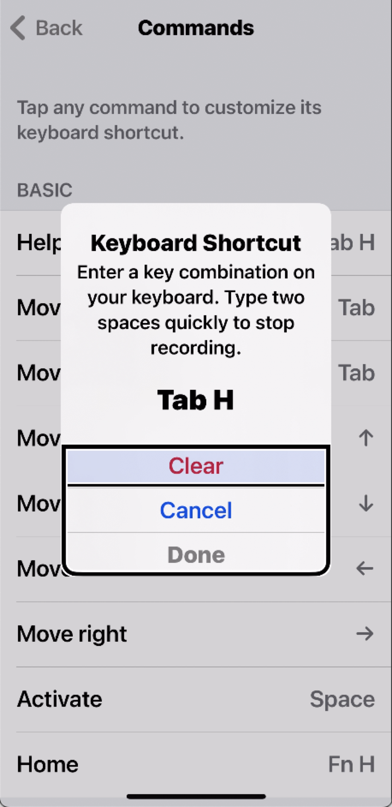

Any bluetooth keyboard should work. If you are testing both iOS and Android, it is worth having a dedicated keyboard for each. If you are working alone and would like to save money, you can use one keyboard for two devices. It is more convenient if you get a multi-device keyboard because they allow switching between multiple paired devices instead of having to constantly unpair and pair. Another way to use one keyboard with multiple devices is with Apple’s Magic Keyboard which can be connected using bluetooth to an iPhone and using USB-C to a Google Pixel.
- Pair your keyboard with your iPhone by going to
Settings > Bluetoothand setting BluetoothOn. - Choose your bluetooth keyboard.
- Before using your keyboard, enable FKA (Full Keyboard Access) by going to
Accessibility > Keyboards > Full Keyboard Access.
- Pair your keyboard with your Android device by going to
Settings > Connected Devices > Pair new device. - Upon connection, you get a prompt confirming the keyboard type.
After connecting the keyboard, go to Settings > System > Languages & Input > Physical Keyboard > Keyboard Shortcuts.
Note
These steps were reproduced on a Pixel 5a running Android 13.
This will display a list of keyboard shortcuts.

The shortcut list uses a search icon which may be present on some keyboards. On the Logitech K480 and K780 models, the search icon corresponds to the start key. On Apple’s Magic Keyboard, this corresponds to the command key. You may need to experiment and confirm to determine what this is on your keyboard.
The list of shortcuts shown does not show how to perform some critical actions like navigating between the top bar and the main content but this is provided in the full keystroke table below (action: Switch between panes). Also, Android keystrokes cannot be re-mapped.
Go to Settings > Accessibility > Keyboards > Full Keyboard Access > Commands.
This gives a full list of the commands and allows re-mapping and recording keyboard shortcuts.

| Action | Magic keyboard | Logitech K480 | Logitech K780 |
|---|---|---|---|
| Navigate to the next interactive element | tab |
tab |
tab |
| Navigate to the previous interactive element | shift + tab |
shift + tab |
shift + tab |
| Scroll/Go to next item in group Select items in a collection, list, or menu |
arrow keys |
arrow keys |
arrow keys |
| Activate an interactive element | enter or space bar |
enter or space bar |
enter or space bar |
| Go Back. This can be used to dismiss menus and popups. | command + backspace |
search-icon key + back |
start + left arrow or back/F6 |
| Exit | esc |
esc |
back/F6 or home/F4 |
| Switch between apps | option + tab |
Android 13 or lower: alt + tab Android 14 and up: alt + tab or start + tab |
Android 13 or lower: alt + tab Android 14 and up: alt + tab or start + tab |
| Switch between panes such as top navigation pane and main content | Android 13 or lower: command + tabAndroid 14 and up: control + tab |
Android 13 or lower: start + tab Android 14 and up: control + tab |
Android 13 or lower: start + tab Android 14 and up: control + tab |
| Open keyboard shortcuts list. - The shortcuts for Home, Back and Notifications use the search-icon key which is just the command key. |
command + / |
start + / |
start + / (Does not work with numpad / key) |
| Action | Magic keyboard | Logitech K480 | Logitech K780 |
|---|---|---|---|
| Navigate to the next interactive element | tab |
tab |
tab |
| Navigate to the previous interactive element | shift + tab |
shift + tab |
shift + tab |
| Scroll/Go to next item in group Select items in a collection, list, or menu |
arrow keys |
arrow keys |
arrow keys |
| Activate an interactive element | space bar |
space bar |
space bar |
| Show Help | tab + h |
tab + h |
tab + h |
| Go Back. This can be used to dismiss menus and popups. | tab + b |
tab + b |
tab + b |
| Exit | esc |
esc |
back/F6 or home/F4 |
| Show Custom Accessibility Actions | tab + z |
tab + z |
tab + z |
| Switch between apps | function + up arrow |
Double-press back/F4 |
Double-press back/F6 |
| Test Steps | WCAG SC |
|---|---|
| Ensure all actions can be performed by keyboard. | 2.1.1 Keyboard |
| Ensure there are no keyboard traps | 2.1.2 No Keyboard Trap |
| Ensure the focus order is logical. | 2.4.3 Focus Order |
| Ensure keyboard focus is visible | 2.4.7 Focus Visible |
| When any user interface component receives focus, ensure it does not initiate a change of context. | 3.2.1 On Focus |
| Ensure character key shortcuts without modifiers can be remapped or turned off | 2.1.4 Character Key Shortcuts |
| Ensure content which appears on focus, is persistent and dismissable. | 1.4.13 Content on Hover or Focus |
- Ensure all actions can be performed by keyboard.
- iOS:
- If an action is not available, check if there are custom actions. Also try
tab + gto perform keyboard gestures. Depending on interpretation, keyboard gestures may not be a viable alternative for meeting 2.1.1.
- If an action is not available, check if there are custom actions. Also try
- Android:
- If an action is not available. Open the keyboard shortcuts list to check for any alternative methods to perform an action.
- If you cannot access the top navigation pane or other segment of the screen, check if you can reach the area by using the “switch between panes” keystroke.
- iOS:
- Ensure there are no keyboard traps.
- If an element receives keyboard focus, it should be possible to move focus away using standard inputs or there are instructions to guide users.
- Ensure the focus order is logical.
- When navigation sequences affect meaning and operability, focusable elements need to receive focus in an order that preserves meaning and operability.
- The focus order should generally follow the reading order: top to bottom and start to end. However, the focus order can also differ as long as the order makes sense for the activity.
- When a popup appears focus should be set on the new content and when dismissed, focus should be returned to the triggering element.
- Ensure keyboard focus is visible.
- Users should always be able to tell which element has keyboard focus.
- iOS:
- The default FKA indicator is enough and it can be customized in the Full Keyboard Access settings.
- Android:
- The default focus indicator tends to be very faint. In cases where the developer has not modified the default Android styles (including background color and button color), then the default indicator is sufficient. But in the much more unlikely case of custom focus styles, the developer must ensure the focus indicator is sufficient and should adjust the default to ensure the contrast ratio is at least 3:1.
- When any user interface component receives focus, ensure it does not initiate a change of context. Note: this is unlikely to occur on native mobile apps.
- Ensure elements receiving focus do not cause any of the following:
- Forms submitted automatically;
- New windows are launched;
- Focus jumps to another component;
- A different app or user agent is activated;
- Content is changed that affects the meaning of the screen/page;
- Ensure elements receiving focus do not cause any of the following:
- Ensure character key shortcuts without modifiers can be remapped or turned off.
- Try inputting all of the alphabet, punctuation, number and symbol characters. If any of these keys are used alone then make sure one of the following is true:
- There is a mechanism available to turn the shortcut off;
- A mechanism is available to remap the shortcut to include one or more non-printable keyboard keys (e.g.,
ctrl, alt/option) - The keyboard shortcut for a user interface element is only active when that element has focus.
- Try inputting all of the alphabet, punctuation, number and symbol characters. If any of these keys are used alone then make sure one of the following is true:
- Ensure content which appears in focus, is persistent and dismissable. Note: this is unlikely to occur on native mobile apps.
- Where receiving keyboard focus triggers additional content to become visible and then hidden, the following are true:
- Dismissible: A mechanism is available to dismiss the additional content without moving keyboard focus, unless the additional content communicates an input error or does not obscure or replace other content;
- Persistent: The additional content remains visible until the focus trigger is removed, the user dismisses it, or its information is no longer valid.
- (Hoverable is not applicable to mobile because it is only for mouse hover.)
- Where receiving keyboard focus triggers additional content to become visible and then hidden, the following are true: